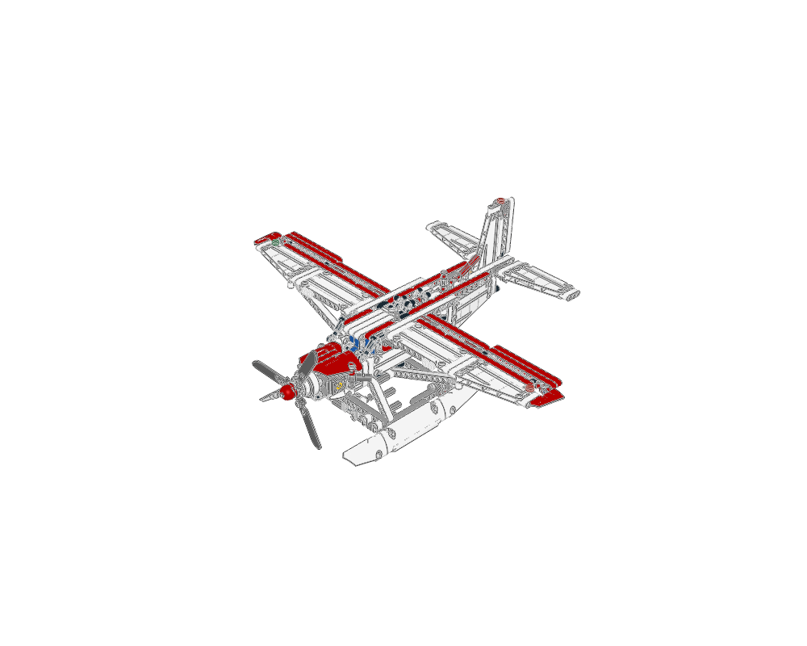
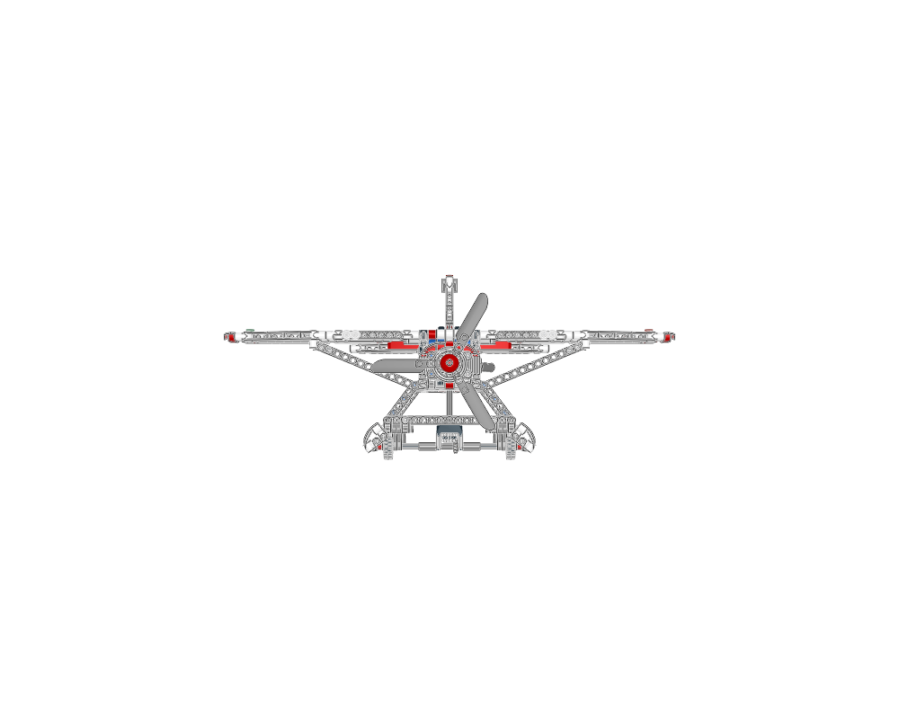
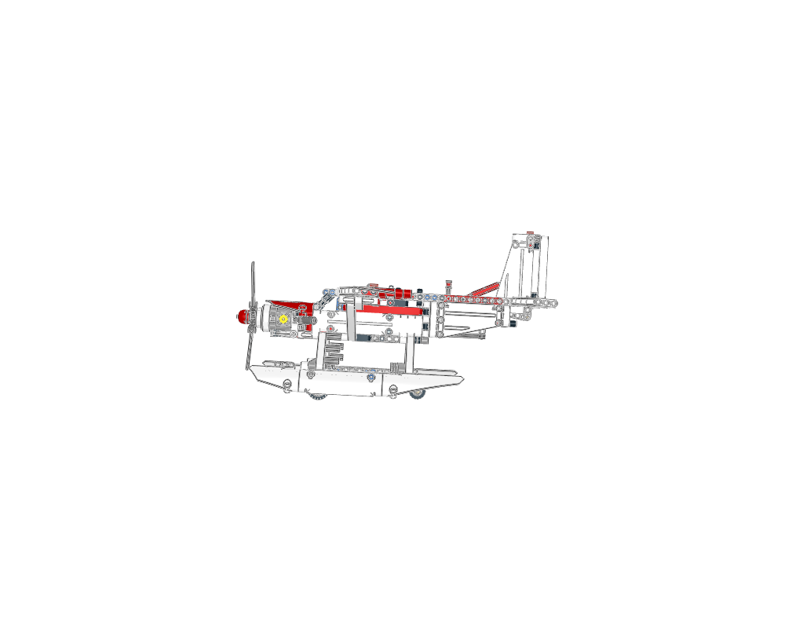
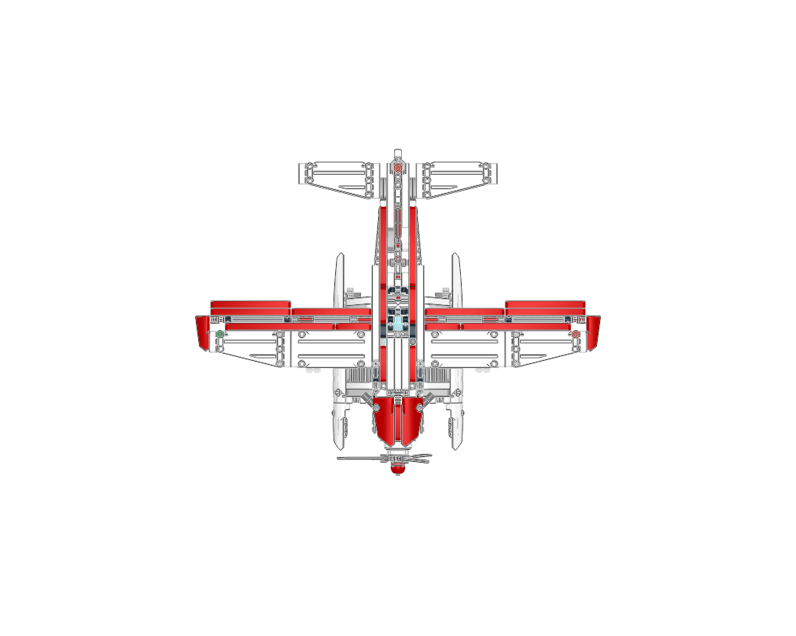
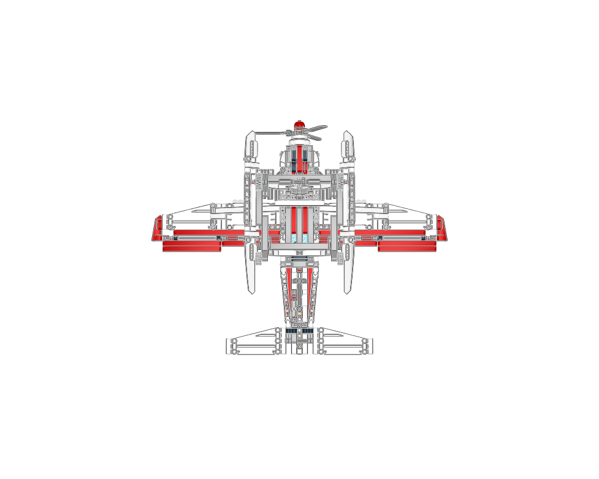
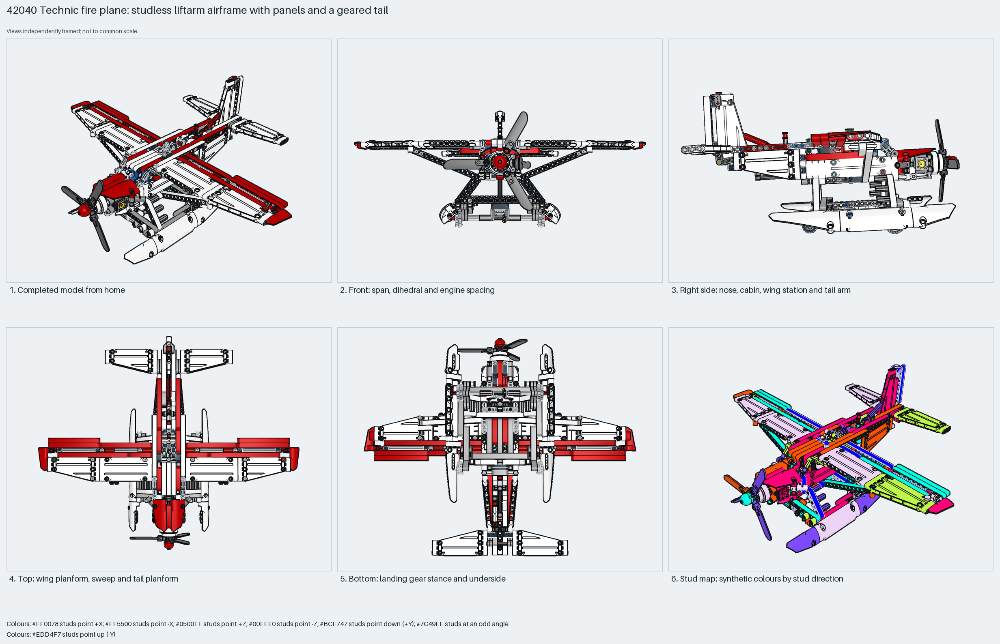

A studless Technic fire plane: three red spar beams carry panel wings, a liftarm fin and a joystick-geared stabiliser; a two-cylinder engine with a three-blade rotor sits in the nose; V-strut landing gear on treaded 61254 tyres hangs under a liftarm belly; the water bay door works on a rubber band. Measured: span 53 studs, length 42, height 23, 570 parts, 94% Technic.
construction
570 parts in 114 steps across 20 sections: the root frame with `floor`, `seats`, `leftside` and `rearframe`; the `motor` engine tree in the nose; the `tail` tree (fin, stabiliser, gearing, joystick, both wings and tail sides); two `flap` children; the `rubberBandRound-1` LDCad band and embedded 61254 tyre, 2850b and 33299b parts.
interfaces
Studless: 172 sideways and 398 angled placements. Pins and axles throughout; the engine cradle, floor and spar beams meet the front frame; the wings pin to the spars; the gear V struts pin under the floor.
parent context
Root section; nothing places it. Built with the propeller at −Z.
reuse notes
Use it for the layout of a studless Technic prop plane: a floor-and-spar frame, panels as wing and tail skins, and one cockpit lever driving a surface. Inspiration only: the embedded tyres and the rubber band are raw geometry; use the library 61254 and the flex workflow for the band when rebuilding.

home

front

right

top

bottom

mosaic
Sections to study separately
Use manual prepare on a selected source section to create its build pages.